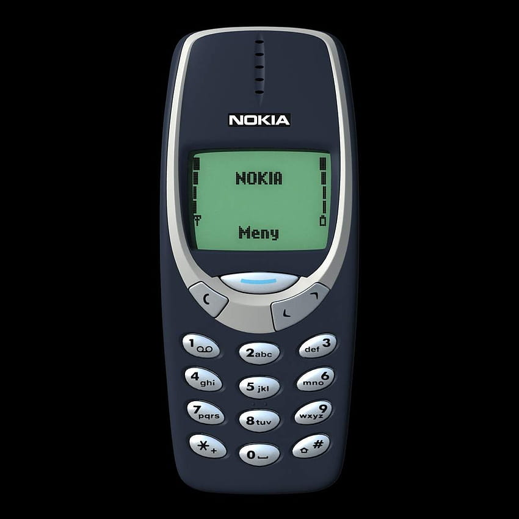
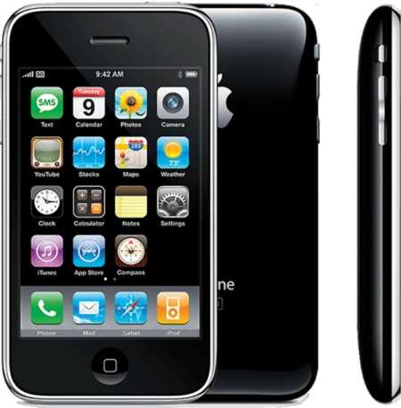
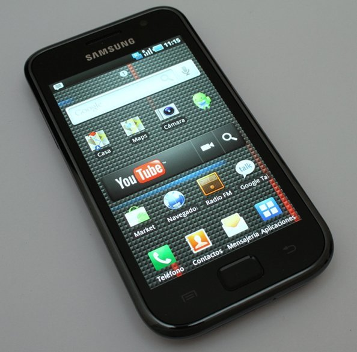

Teléfonos Inteligentes: El Epicentro Digital
Más que simples teléfonos, los smartphones integran telefonía, computación avanzada e internet en un dispositivo de bolsillo. Han revolucionado radicalmente la comunicación, el acceso a la información, el entretenimiento y el desarrollo de software.
Permiten conexiones instantáneas globales, un ecosistema masivo de aplicaciones innovadoras y el aprendizaje continuo en cualquier momento y lugar, redefiniendo nuestra interacción con el mundo digital.
Hitos en la Evolución Móvil

DynaTAC 8000X
1983El primer celular comercial verdaderamente portátil. (Clic para más)

Nokia 3310
2000Un ícono de durabilidad y popularidad global. (Clic para más)

iPhone
2007Revolucionó la industria con su interfaz táctil. (Clic para más)

Samsung Galaxy S
2010Clave en la consolidación del ecosistema Android. (Clic para más)